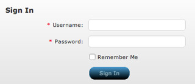
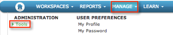
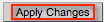

Go to CA Cloud Service Management at https://sm1t.saas.ca.com/#login. The screen shown below appears. Sign in with your administrative credentials.

Select Manage in the top menu, and then select Tools in the Administration section, as shown below.

Copy the following information into the Identity Provider Login URL (SSO) field, shown below.
Sign into the Okta Admin dashboard to generate this value.Copy the following information into the Redirect to URL On Logout URL field, shown below.
Sign into the Okta Admin dashboard to generate this value.Copy and paste the following Identify Provider Certificate, as shown below. Be sure to include the Begin Certificate and End Certificate lines.
Sign into the Okta Admin dashboard to generate this value.

Select Apply Changes, on the right side of the window, as shown below.
